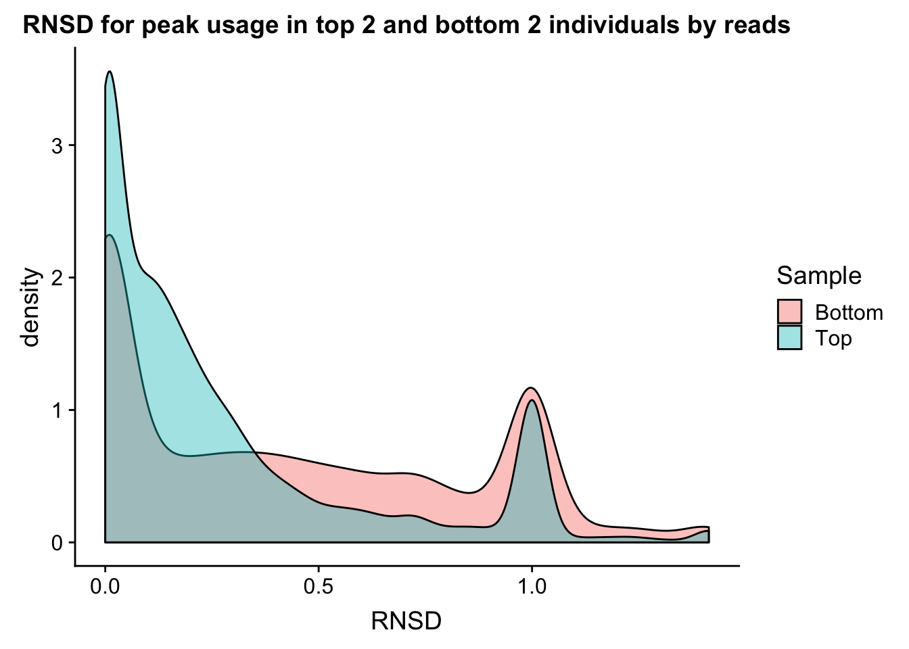
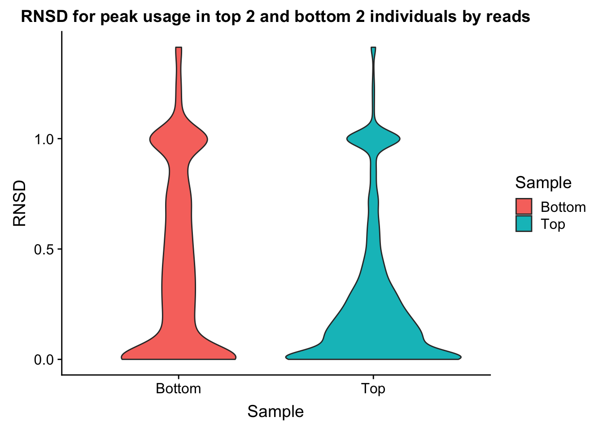

Individaul differences in PAS Usage
Briana Mittleman
2/5/2019
Last updated: 2019-02-07
workflowr checks: (Click a bullet for more information)-
✔ R Markdown file: up-to-date
Great! Since the R Markdown file has been committed to the Git repository, you know the exact version of the code that produced these results.
-
✔ Environment: empty
Great job! The global environment was empty. Objects defined in the global environment can affect the analysis in your R Markdown file in unknown ways. For reproduciblity it’s best to always run the code in an empty environment.
-
✔ Seed:
set.seed(12345)The command
set.seed(12345)was run prior to running the code in the R Markdown file. Setting a seed ensures that any results that rely on randomness, e.g. subsampling or permutations, are reproducible. -
✔ Session information: recorded
Great job! Recording the operating system, R version, and package versions is critical for reproducibility.
-
Great! You are using Git for version control. Tracking code development and connecting the code version to the results is critical for reproducibility. The version displayed above was the version of the Git repository at the time these results were generated.✔ Repository version: e41afd9
Note that you need to be careful to ensure that all relevant files for the analysis have been committed to Git prior to generating the results (you can usewflow_publishorwflow_git_commit). workflowr only checks the R Markdown file, but you know if there are other scripts or data files that it depends on. Below is the status of the Git repository when the results were generated:
Note that any generated files, e.g. HTML, png, CSS, etc., are not included in this status report because it is ok for generated content to have uncommitted changes.Ignored files: Ignored: .DS_Store Ignored: .Rhistory Ignored: .Rproj.user/ Ignored: data/.DS_Store Ignored: data/perm_QTL_trans_noMP_5percov/ Ignored: output/.DS_Store Untracked files: Untracked: KalistoAbundance18486.txt Untracked: analysis/4suDataIGV.Rmd Untracked: analysis/DirectionapaQTL.Rmd Untracked: analysis/EvaleQTLs.Rmd Untracked: analysis/YL_QTL_test.Rmd Untracked: analysis/accountMapBias.Rmd Untracked: analysis/ncbiRefSeq_sm.sort.mRNA.bed Untracked: analysis/snake.config.notes.Rmd Untracked: analysis/verifyBAM.Rmd Untracked: analysis/verifybam_dubs.Rmd Untracked: code/PeaksToCoverPerReads.py Untracked: code/strober_pc_pve_heatmap_func.R Untracked: data/18486.genecov.txt Untracked: data/APApeaksYL.total.inbrain.bed Untracked: data/ApaQTLs/ Untracked: data/ChromHmmOverlap/ Untracked: data/DistTXN2Peak_genelocAnno/ Untracked: data/GM12878.chromHMM.bed Untracked: data/GM12878.chromHMM.txt Untracked: data/LianoglouLCL/ Untracked: data/LocusZoom/ Untracked: data/NuclearApaQTLs.txt Untracked: data/PeakCounts/ Untracked: data/PeakCounts_noMP_5perc/ Untracked: data/PeakCounts_noMP_genelocanno/ Untracked: data/PeakUsage/ Untracked: data/PeakUsage_noMP/ Untracked: data/PeakUsage_noMP_GeneLocAnno/ Untracked: data/PeaksUsed/ Untracked: data/PeaksUsed_noMP_5percCov/ Untracked: data/RNAkalisto/ Untracked: data/RefSeq_annotations/ Untracked: data/TotalApaQTLs.txt Untracked: data/Totalpeaks_filtered_clean.bed Untracked: data/UnderstandPeaksQC/ Untracked: data/YL-SP-18486-T-combined-genecov.txt Untracked: data/YL-SP-18486-T_S9_R1_001-genecov.txt Untracked: data/YL_QTL_test/ Untracked: data/apaExamp/ Untracked: data/apaQTL_examp_noMP/ Untracked: data/bedgraph_peaks/ Untracked: data/bin200.5.T.nuccov.bed Untracked: data/bin200.Anuccov.bed Untracked: data/bin200.nuccov.bed Untracked: data/clean_peaks/ Untracked: data/comb_map_stats.csv Untracked: data/comb_map_stats.xlsx Untracked: data/comb_map_stats_39ind.csv Untracked: data/combined_reads_mapped_three_prime_seq.csv Untracked: data/diff_iso_GeneLocAnno/ Untracked: data/diff_iso_proc/ Untracked: data/diff_iso_trans/ Untracked: data/ensemble_to_genename.txt Untracked: data/example_gene_peakQuant/ Untracked: data/explainProtVar/ Untracked: data/filtPeakOppstrand_cov_noMP_GeneLocAnno_5perc/ Untracked: data/filtered_APApeaks_merged_allchrom_refseqTrans.closest2End.bed Untracked: data/filtered_APApeaks_merged_allchrom_refseqTrans.closest2End.noties.bed Untracked: data/first50lines_closest.txt Untracked: data/gencov.test.csv Untracked: data/gencov.test.txt Untracked: data/gencov_zero.test.csv Untracked: data/gencov_zero.test.txt Untracked: data/gene_cov/ Untracked: data/joined Untracked: data/leafcutter/ Untracked: data/merged_combined_YL-SP-threeprimeseq.bg Untracked: data/molPheno_noMP/ Untracked: data/mol_overlap/ Untracked: data/mol_pheno/ Untracked: data/nom_QTL/ Untracked: data/nom_QTL_opp/ Untracked: data/nom_QTL_trans/ Untracked: data/nuc6up/ Untracked: data/nuc_10up/ Untracked: data/other_qtls/ Untracked: data/pQTL_otherphen/ Untracked: data/peakPerRefSeqGene/ Untracked: data/perm_QTL/ Untracked: data/perm_QTL_GeneLocAnno_noMP_5percov/ Untracked: data/perm_QTL_GeneLocAnno_noMP_5percov_3UTR/ Untracked: data/perm_QTL_opp/ Untracked: data/perm_QTL_trans/ Untracked: data/perm_QTL_trans_filt/ Untracked: data/protAndAPAAndExplmRes.Rda Untracked: data/protAndAPAlmRes.Rda Untracked: data/protAndExpressionlmRes.Rda Untracked: data/reads_mapped_three_prime_seq.csv Untracked: data/smash.cov.results.bed Untracked: data/smash.cov.results.csv Untracked: data/smash.cov.results.txt Untracked: data/smash_testregion/ Untracked: data/ssFC200.cov.bed Untracked: data/temp.file1 Untracked: data/temp.file2 Untracked: data/temp.gencov.test.txt Untracked: data/temp.gencov_zero.test.txt Untracked: data/threePrimeSeqMetaData.csv Untracked: data/threePrimeSeqMetaData55Ind.txt Untracked: data/threePrimeSeqMetaData55Ind.xlsx Untracked: output/picard/ Untracked: output/plots/ Untracked: output/qual.fig2.pdf Unstaged changes: Modified: analysis/28ind.peak.explore.Rmd Modified: analysis/CompareLianoglouData.Rmd Modified: analysis/apaQTLoverlapGWAS.Rmd Modified: analysis/cleanupdtseq.internalpriming.Rmd Modified: analysis/coloc_apaQTLs_protQTLs.Rmd Modified: analysis/dif.iso.usage.leafcutter.Rmd Modified: analysis/diff_iso_pipeline.Rmd Modified: analysis/explainpQTLs.Rmd Modified: analysis/explore.filters.Rmd Modified: analysis/flash2mash.Rmd Modified: analysis/mispriming_approach.Rmd Modified: analysis/overlapMolQTL.Rmd Modified: analysis/overlapMolQTL.opposite.Rmd Modified: analysis/overlap_qtls.Rmd Modified: analysis/peakOverlap_oppstrand.Rmd Modified: analysis/peakQCPPlots.Rmd Modified: analysis/pheno.leaf.comb.Rmd Modified: analysis/pipeline_55Ind.Rmd Modified: analysis/swarmPlots_QTLs.Rmd Modified: analysis/test.max2.Rmd Modified: analysis/understandPeaks.Rmd Modified: code/Snakefile
Expand here to see past versions:
library(workflowr)This is workflowr version 1.1.1
Run ?workflowr for help getting startedlibrary(tidyverse)── Attaching packages ────────────────────────────────────────────────────────── tidyverse 1.2.1 ──✔ ggplot2 3.0.0 ✔ purrr 0.2.5
✔ tibble 1.4.2 ✔ dplyr 0.7.6
✔ tidyr 0.8.1 ✔ stringr 1.3.1
✔ readr 1.1.1 ✔ forcats 0.3.0── Conflicts ───────────────────────────────────────────────────────────── tidyverse_conflicts() ──
✖ dplyr::filter() masks stats::filter()
✖ dplyr::lag() masks stats::lag()So far i have been looking at mean peak usage for my filters. As a QC metric, I want to look at the variance in this measurement. I want to understand the reproducibility of the data at a usage percent level. I also want to see if this value is dependent on coverage. I will look at the peaks used in the QTL analysis with 55 individuals and comopute an RNSD value for each gene. This value is computed as \(\sqrt{\sum_{n=1}^N (X-Y)^2}\). Here n is the number of peaks in the gene up to N. X and Y are different individuals. I will plot this value for each gene. I can do this for 2 individuals with low depth and 2 with high depth.
I can start with just the total individuals.
First step is to convert /project2/gilad/briana/threeprimeseq/data/phenotypes_filtPeakTranscript_noMP_GeneLocAnno_5percUs_3UTR/filtered_APApeaks_merged_allchrom_refseqGenes.GeneLocAnno_NoMP_sm_quant.Total.3UTR.fixed.pheno_5perc.fc.gz to numeric.
First I will cut the first column to just get the counts:
less /project2/gilad/briana/threeprimeseq/data/phenotypes_filtPeakTranscript_noMP_GeneLocAnno_5percUs/filtered_APApeaks_merged_allchrom_refseqGenes.GeneLocAnno_NoMP_sm_quant.Total.fixed.pheno_5perc.fc.gz | cut -f1 -d" " --complement | sed '1d' > /project2/gilad/briana/threeprimeseq/data/PeakUsage_noMP_GeneLocAnno/filtered_APApeaks_merged_allchrom_refseqGenes.GeneLocAnno_NoMP_sm_quant.Total.fixed.pheno_5perc.fc_counts 5percCovUsageToNumeric.py
def convert(infile, outfile):
final=open(outfile, "w")
for ln in open(infile, "r"):
line_list=ln.split()
new_list=[]
for i in line_list:
num, dem = i.split("/")
if dem == "0":
perc = "0.00"
else:
perc = int(num)/int(dem)
perc=round(perc,2)
perc= str(perc)
new_list.append(perc)
final.write("\t".join(new_list)+ '\n')
final.close()
convert("/project2/gilad/briana/threeprimeseq/data/PeakUsage_noMP_GeneLocAnno/filtered_APApeaks_merged_allchrom_refseqGenes.GeneLocAnno_NoMP_sm_quant.Total.fixed.pheno_5perc.fc_counts","/project2/gilad/briana/threeprimeseq/data/PeakUsage_noMP_GeneLocAnno/filtered_APApeaks_merged_allchrom_refseqGenes.GeneLocAnno_NoMP_sm_quant.Total.fixed.pheno_5perc.numeric.txt")
Get the gene names from the first file:
less /project2/gilad/briana/threeprimeseq/data/phenotypes_filtPeakTranscript_noMP_GeneLocAnno_5percUs/filtered_APApeaks_merged_allchrom_refseqGenes.GeneLocAnno_NoMP_sm_quant.Total.fixed.pheno_5perc.fc.gz | cut -f1 -d" " | sed '1d' > PeakIDs.txtMerge the files: PeakIDs.txt and the numeric version
paste PeakIDs.txt filtered_APApeaks_merged_allchrom_refseqGenes.GeneLocAnno_NoMP_sm_quant.Total.fixed.pheno_5perc.numeric.txt > filtered_APApeaks_merged_allchrom_refseqGenes.GeneLocAnno_NoMP_sm_quant.Total.fixed.pheno_5perc.numeric.named.txtnames=read.table("../data/PeakUsage_noMP_GeneLocAnno/PeakUsageHeader.txt",stringsAsFactors = F) %>% t %>% as_data_frame()
usageTot=read.table("../data/PeakUsage_noMP_GeneLocAnno/filtered_APApeaks_merged_allchrom_refseqGenes.GeneLocAnno_NoMP_sm_quant.Total.fixed.pheno_5perc.numeric.named.txt", header=F, stringsAsFactors = F)
colnames(usageTot)= names$V1I want to use ind based on coverage
metadataTotal=read.table("../data/threePrimeSeqMetaData55Ind.txt", header=T) %>% filter(fraction=="total")
#top
metadataTotal %>% arrange(desc(reads)) %>% slice(1:2) Sample_ID line fraction batch fqlines reads mapped prop_mapped
1 18504_T 18504 total 4 139198896 34799724 25970922 0.746296781
2 18855_T 18855 total 4 139040660 34760165 24532100 0.705753267
Mapped_noMP prop_MappedwithoutMP Sex Wake_Up Collection count1 count2
1 14703998 0.422532029 M 10/31/18 11/19/18 1.9 1.44
2 12999618 0.373980331 F 10/31/18 11/19/18 1.6 1.40
alive1 alive2 alive_avg undiluted_avg Extraction Conentration
1 83 81 82.0 1.67 12.12.18 1984.6
2 71 80 75.5 1.50 12.12.18 2442.9
ratio260_280 to_use h20 threeprime_start Cq cycles library_conc
1 2.07 0.50 9.50 12.17.18 19.67 20 0.402
2 2.08 0.41 9.59 12.17.18 21.00 24 0.353#bottom
metadataTotal %>% arrange(reads) %>% slice(1:2) Sample_ID line fraction batch fqlines reads mapped prop_mapped
1 19160_T 19160 total 2 30319920 7579980 5473593 0.7221118
2 19101_T 19101 total 4 33766300 8441575 6741550 0.798612818
Mapped_noMP prop_MappedwithoutMP Sex Wake_Up Collection count1 count2
1 4009189 0.52891815 M 6/19/18 7/10/18 NA NA
2 3630954 0.430127553 M 11/26/18 12/14/18 0.976 1.05
alive1 alive2 alive_avg undiluted_avg Extraction Conentration
1 NA NA 90 1.100 7.12.18 1287.1
2 76 86 81 1.013 12.16.18 2453.6
ratio260_280 to_use h20 threeprime_start Cq cycles library_conc
1 2.07 0.78 9.22 7.19.18 19.44 20 1.440
2 2.07 0.41 9.59 12.17.18 23.14 24 0.0972 Top read ind: NA18504, NA18855
2 bottom read ind: NA19160, NA19101
topInd=usageTot %>% select(chrom, NA18504, NA18855) %>% separate(chrom, into=c("chr", "start", "end", "geneInf"), sep =":") %>% separate(geneInf, into=c("gene", "strand", "peak"), sep="_") %>% mutate(val=(NA18504-NA18855)^2) %>% group_by(gene) %>% summarise(sumPeaks=sum(val)) %>% mutate(RNSD=sqrt(sumPeaks)) %>% mutate(Sample="Top") %>% select(Sample, RNSD)Warning: Expected 3 pieces. Additional pieces discarded in 4 rows [4757,
4758, 4759, 35047].bottomInd=usageTot %>% select(chrom, NA19160, NA19101) %>% separate(chrom, into=c("chr", "start", "end", "geneInf"), sep =":") %>% separate(geneInf, into=c("gene", "strand", "peak"), sep="_") %>% mutate(val=(NA19160-NA19101)^2) %>% group_by(gene) %>% summarise(sumPeaks=sum(val)) %>% mutate(RNSD=sqrt(sumPeaks)) %>% mutate(Sample="Bottom") %>% select(Sample, RNSD)Warning: Expected 3 pieces. Additional pieces discarded in 4 rows [4757,
4758, 4759, 35047].bothInd= data.frame(rbind(topInd, bottomInd))ggplot(bothInd, aes(x=RNSD, by=Sample, fill=Sample))+geom_density(alpha=.4) +labs(title="RNSD for peak usage in top 2 and bottom 2 individuals by reads")
ggplot(bothInd, aes(y=RNSD, x=Sample, fill=Sample))+geom_violin() + labs(title="RNSD for peak usage in top 2 and bottom 2 individuals by reads")
Change the statistic to increase the interpretability.
I can look at just genes with 2 peaks. I can then sum the absolute value of the individual differences.
TwoPeakGenes_top= usageTot %>% select(chrom, NA18504, NA18855) %>% separate(chrom, into=c("chr", "start", "end", "geneInf"), sep =":") %>% separate(geneInf, into=c("gene", "strand", "peak"), sep="_") %>% group_by(gene) %>% mutate(nPeak=n()) %>% filter(nPeak==2)Warning: Expected 3 pieces. Additional pieces discarded in 4 rows [4757,
4758, 4759, 35047].n2Peak=unique(TwoPeakGenes_top$gene) %>% length() This gives us 3448 genes.
TwoPeakGenes_top_stat= TwoPeakGenes_top %>% mutate(absDiff=abs(NA18504-NA18855)) %>% group_by(gene) %>% select(gene, absDiff) %>% distinct(gene, .keep_all=T)
Avg2PeakGeneTop=sum(TwoPeakGenes_top_stat$absDiff)/n2Peak
Avg2PeakGeneTop[1] 0.1925493Now do this for the bottom 2 ind:
TwoPeakGenes_bottom= usageTot %>% select(chrom, NA19160, NA19101) %>% separate(chrom, into=c("chr", "start", "end", "geneInf"), sep =":") %>% separate(geneInf, into=c("gene", "strand", "peak"), sep="_") %>% group_by(gene) %>% mutate(nPeak=n()) %>% filter(nPeak==2)Warning: Expected 3 pieces. Additional pieces discarded in 4 rows [4757,
4758, 4759, 35047].TwoPeakGenes_bottom_stat= TwoPeakGenes_bottom %>% mutate(absDiff=abs(NA19101-NA19160)) %>% group_by(gene) %>% select(gene, absDiff) %>% distinct(gene, .keep_all=T)
Avg2PeakGeneBottom=sum(TwoPeakGenes_bottom_stat$absDiff)/n2Peak
Avg2PeakGeneBottom[1] 0.2727929This demonstrates we may have some noise in the data and have not reached sequencing saturation. However, this could be driven by lowly expressed genes. I will fraction this analysis by the top expressed and bottom expressed genes. To do this I will pull in the count data (before we had usage parameters) and add to this table the mean counts.
Count files:
- /project2/gilad/briana/threeprimeseq/data/filtPeakOppstrand_cov_noMP_GeneLocAnno/filtered_APApeaks_merged_allchrom_refseqGenes.GeneLocAnno_NoMP_sm_quant.Nuclear.fixed.fc
- /project2/gilad/briana/threeprimeseq/data/filtPeakOppstrand_cov_noMP_GeneLocAnno/filtered_APApeaks_merged_allchrom_refseqGenes.GeneLocAnno_NoMP_sm_quant.Total.fixed.fc
I need to filter these for the peaks I kept after the 5% usage filter.
filterCounts_5percCovPeaks.py
#python
totalokPeaks5perc_file="/project2/gilad/briana/threeprimeseq/data/phenotypes_filtPeakTranscript_noMP_GeneLocAnno_3UTR/filtered_APApeaks_merged_allchrom_refseqGenes.GeneLocAnno.NoMP_sm_quant.Total.3UTR_fixed.pheno.5percPeaks.txt"
totalokPeaks5perc={}
for ln in open(totalokPeaks5perc_file,"r"):
peakname=ln.split()[5]
totalokPeaks5perc[peakname]=""
nuclearokPeaks5perc_file="/project2/gilad/briana/threeprimeseq/data/phenotypes_filtPeakTranscript_noMP_GeneLocAnno_3UTR/filtered_APApeaks_merged_allchrom_refseqGenes.GeneLocAnno.NoMP_sm_quant.Nuclear.3UTR_fixed.pheno.5percPeaks.txt"
nuclearokPeaks5perc={}
for ln in open(nuclearokPeaks5perc_file,"r"):
peakname=ln.split()[5]
nuclearokPeaks5perc[peakname]=""
totalPhenoBefore=open("/project2/gilad/briana/threeprimeseq/data/filtPeakOppstrand_cov_noMP_GeneLocAnno/filtered_APApeaks_merged_allchrom_refseqGenes.GeneLocAnno_NoMP_sm_quant.Total.fixed.fc","r")
totalPhenoAfter=open("/project2/gilad/briana/threeprimeseq/data/filtPeakOppstrand_cov_noMP_GeneLocAnno_5perc/filtered_APApeaks_merged_allchrom_refseqGenes.GeneLocAnno_NoMP_sm_quant.Total.fixed.5perc.fc", "w")
for num, ln in enumerate(totalPhenoBefore):
if num == 1:
totalPhenoAfter.write(ln)
if num >1:
id=ln.split()[0].split(":")[0]
if id in totalokPeaks5perc.keys():
totalPhenoAfter.write(ln)
totalPhenoAfter.close()
nuclearPhenoBefore=open("/project2/gilad/briana/threeprimeseq/data/filtPeakOppstrand_cov_noMP_GeneLocAnno/filtered_APApeaks_merged_allchrom_refseqGenes.GeneLocAnno_NoMP_sm_quant.Nuclear.fixed.fc","r")
nuclearPhenoAfter=open("/project2/gilad/briana/threeprimeseq/data/filtPeakOppstrand_cov_noMP_GeneLocAnno_5perc/filtered_APApeaks_merged_allchrom_refseqGenes.GeneLocAnno_NoMP_sm_quant.Nuclear.fixed.5perc.fc", "w")
for num, ln in enumerate(nuclearPhenoBefore):
if num ==1:
nuclearPhenoAfter.write(ln)
if num > 1:
id=ln.split()[0].split(":")[0]
if id in nuclearokPeaks5perc.keys():
nuclearPhenoAfter.write(ln)
nuclearPhenoAfter.close() Pull the filtered counts for the total here and get the genes in TwoPeakGenes_top_stat$gene. For simplicity I will just look at the ind. with the top coverage.
TotalCounts=read.table("../data/filtPeakOppstrand_cov_noMP_GeneLocAnno_5perc/filtered_APApeaks_merged_allchrom_refseqGenes.GeneLocAnno_NoMP_sm_quant.Total.fixed.5perc.fc", header=T, stringsAsFactors = F) %>% separate(Geneid, into =c('peak', 'chr', 'start', 'end', 'strand', 'gene'), sep = ":") %>% select(-peak, -chr, -start, -end, -strand, -Chr, -Start, -End, -Strand, -Length) %>% group_by(gene) %>% mutate(PeakCount=n()) %>% filter(PeakCount==2) %>% select(gene, X18504_T) %>% group_by(gene) %>% summarise(Exp=sum(X18504_T)) Top 1000 genes
TotalCounts_top1000= TotalCounts %>% arrange(desc(Exp)) %>% top_n(1000)Selecting by ExpJoin this with top ind:
TwoPeakGenes_top_stat_top100 = TwoPeakGenes_top_stat %>% inner_join(TotalCounts_top1000, by="gene")
Avg2PeakGeneTopExpHigh=sum(TwoPeakGenes_top_stat_top100$absDiff)/nrow(TwoPeakGenes_top_stat_top100)
Avg2PeakGeneTopExpHigh[1] 0.08976974Do the same for low expressed genes (not 0)
TotalCounts_bottom1000= TotalCounts %>% filter(Exp > 0) %>% top_n(-1000)Selecting by ExpTwoPeakGenes_top_stat_bottom100 = TwoPeakGenes_top_stat %>% inner_join(TotalCounts_bottom1000, by="gene")
Avg2PeakGeneTopExpLow=sum(TwoPeakGenes_top_stat_bottom100$absDiff)/nrow(TwoPeakGenes_top_stat_bottom100)
Avg2PeakGeneTopExpLow[1] 0.2595732Do this for the other individuals as wel..
TwoPeakGenes_bottom_stat_top100 = TwoPeakGenes_bottom_stat %>% inner_join(TotalCounts_top1000, by="gene")
Avg2PeakGeneBottomExpHigh=sum(TwoPeakGenes_bottom_stat_top100$absDiff)/nrow(TwoPeakGenes_bottom_stat_top100)
Avg2PeakGeneBottomExpHigh[1] 0.1729441TwoPeakGenes_bottom_stat_bottom100 = TwoPeakGenes_bottom_stat %>% inner_join(TotalCounts_bottom1000, by="gene")
Avg2PeakGeneBottomExpLow=sum(TwoPeakGenes_bottom_stat_bottom100$absDiff)/nrow(TwoPeakGenes_bottom_stat_bottom100)
Avg2PeakGeneBottomExpLow[1] 0.3695122Make a plot with these values:
avgPeakUsageTable=data.frame(rbind(c("Top", "High", .09), c("Top", "Low", .26), c("Bottom", "High", .17), c("Bottom", "Low", .37)))
colnames(avgPeakUsageTable)= c("Coverage", "Expression", "AverageUsageDiff")ggplot(avgPeakUsageTable,aes(y=AverageUsageDiff, x=Coverage, by=Expression, fill=Expression)) + geom_bar(stat="identity",position="dodge") + labs(title="Difference between individual usage \ndepends on expression and coverage")
Session information
sessionInfo()R version 3.5.1 (2018-07-02)
Platform: x86_64-apple-darwin15.6.0 (64-bit)
Running under: macOS 10.14.1
Matrix products: default
BLAS: /Library/Frameworks/R.framework/Versions/3.5/Resources/lib/libRblas.0.dylib
LAPACK: /Library/Frameworks/R.framework/Versions/3.5/Resources/lib/libRlapack.dylib
locale:
[1] en_US.UTF-8/en_US.UTF-8/en_US.UTF-8/C/en_US.UTF-8/en_US.UTF-8
attached base packages:
[1] stats graphics grDevices utils datasets methods base
other attached packages:
[1] bindrcpp_0.2.2 forcats_0.3.0 stringr_1.3.1 dplyr_0.7.6
[5] purrr_0.2.5 readr_1.1.1 tidyr_0.8.1 tibble_1.4.2
[9] ggplot2_3.0.0 tidyverse_1.2.1 workflowr_1.1.1
loaded via a namespace (and not attached):
[1] tidyselect_0.2.4 haven_1.1.2 lattice_0.20-35
[4] colorspace_1.3-2 htmltools_0.3.6 yaml_2.2.0
[7] rlang_0.2.2 R.oo_1.22.0 pillar_1.3.0
[10] glue_1.3.0 withr_2.1.2 R.utils_2.7.0
[13] modelr_0.1.2 readxl_1.1.0 bindr_0.1.1
[16] plyr_1.8.4 munsell_0.5.0 gtable_0.2.0
[19] cellranger_1.1.0 rvest_0.3.2 R.methodsS3_1.7.1
[22] evaluate_0.11 labeling_0.3 knitr_1.20
[25] broom_0.5.0 Rcpp_0.12.19 scales_1.0.0
[28] backports_1.1.2 jsonlite_1.5 hms_0.4.2
[31] digest_0.6.17 stringi_1.2.4 grid_3.5.1
[34] rprojroot_1.3-2 cli_1.0.1 tools_3.5.1
[37] magrittr_1.5 lazyeval_0.2.1 crayon_1.3.4
[40] whisker_0.3-2 pkgconfig_2.0.2 xml2_1.2.0
[43] lubridate_1.7.4 assertthat_0.2.0 rmarkdown_1.10
[46] httr_1.3.1 rstudioapi_0.8 R6_2.3.0
[49] nlme_3.1-137 git2r_0.23.0 compiler_3.5.1
This reproducible R Markdown analysis was created with workflowr 1.1.1